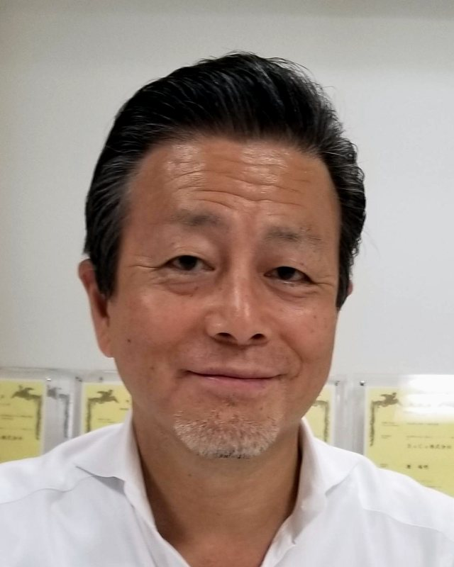
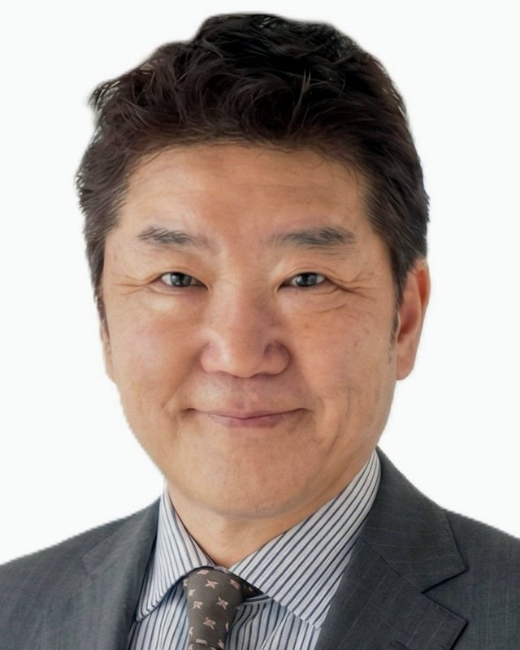
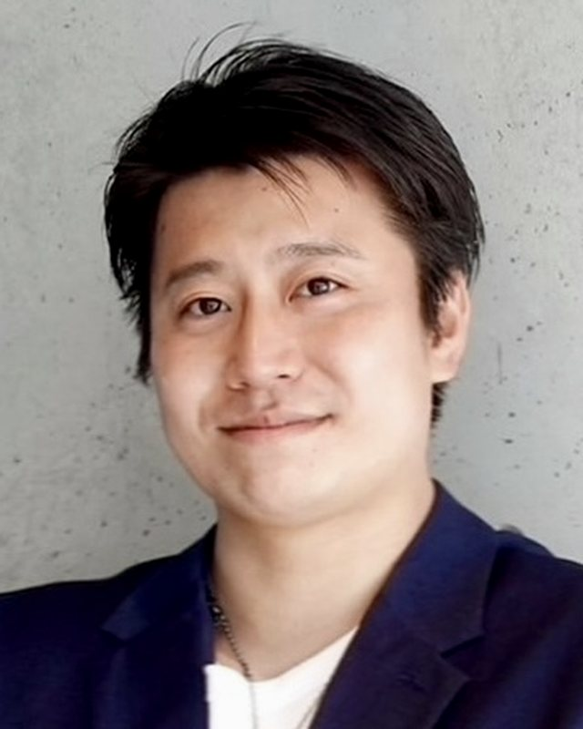

AGILEは、
答えを
東京・八王子の経営パートナー
雷に
設立準備中 2026年11月に法人登記の予定です。ご相談は今から受け付けています。
任せられる
AGILEは、
答えを
社名の
採用や
設備や
点数を
2026年11月の
止まると
雷の
ご相談受付中
準備導入の
見積・日報・報告書などの
まず、
ご相談受付中
準備換算診断は
任せられる
現場の
ご相談受付中
準備内容を
新しい
新しい
ご相談受付中
どの
いま起きている
現状・理想・障壁を
いちばん
結果を
最初の
AGILEは
もの
合言葉は
診断で
BCP
製品の
設備メーカーなどに
雷と
3人で
登記を
もの

大手画像・医療機器メーカーで、
また、
技術を

広告会社で
AGILEでは、
事業を

自動車販売と
AGILEでは、
市場を
※ CEO・COO・CMOは
決まった
名刺を
お問い合わせは
お問い合わせ